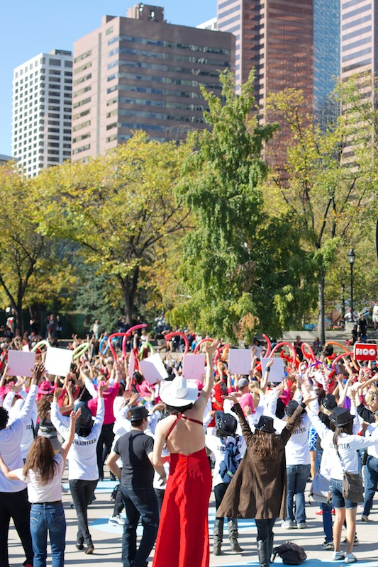
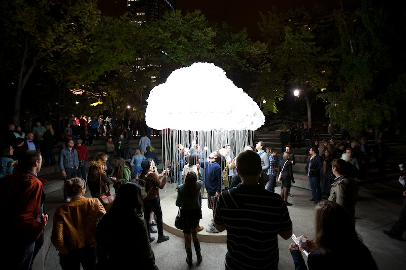

I live in Calgary-Centre.
I love it here.
 Right now this is my Member of Parliament:
*No, not Clint Eastwood's interpretation of Barack Obama, but actually an empty chair*
Fortunately we are having a by-election November 26th to get a new Member of Parliament!
But I've been told that the election has already been decided: Calgary-Centre is a Conservative riding and always will be.
The real battle was who would win the nomination to represent the Conservatives in the election - 300 party members chose the representation for over 120,000 Calgarians, and there's nothing I can do about it.
So I'm going to stay at home and you should too.
Your vote doesn't matter, and it won't make a difference - newspapers have already declared the Conservatives will "sleepwalk" to victory.
So our new Member of Parliament will be Joan Crockatt. Maybe as another back-bench MP for the Conservatives she will have the time to fight for the issues facing us in Calgary.
Issues like great public transit; a smart, stable financial model for Calgary's needs; and a diverse economy - not just a non-renewable one - that makes Calgary a true energy power.
But any hope I had for her dashed when I saw what she said the job means to her: "If I'm a backbench MP, I'm just fine doing that. To me, the job is to support the Prime Minister in whatever way that he thinks."
What about the people of Calgary-Centre? Shouldn't your job be to support us?
I want an MP I can raise my concerns to, not one I can only get a response from if the Prime Minister's Office has supplied one!
But it's already very clear Joan's not interested in serving the people of Calgary Centre. She's avoided nearly every single debate in the riding! If she's like this when she needs votes, what would she be like when she's elected?
Well, we've seen this attitude from MPs around the country. Here's what it looks like in Vancouver:
I've seen this attitude in Calgary too. When Stephen Harper pulled funding for recreation centres in Calgary, not a single Calgary MP would comment on the issue! Even Mayor Nenshi couldn't get an answer.
You know what? I am voting. I don't care if it doesn't make a difference to the outcome. To be silent would be to endorse bad politicians. The kind that make people not want to vote in the first place.
And as it turns out, there is a great candidate in Calgary-Centre.
Chris Turner.
He wants to ensure the longevity of oil sands wealth for Calgarians by promoting the industry, but also ensuring the smart regulation that the world, and its investors, demands.
Better yet, he wants to reinvest our resource wealth in other energy sources and diversify our economy, so regardless if oil is boom or bust, Calgary's still on top.
All this means I can vote for a great candidate, and not only against a bad one.
So even if mine is the only vote for Chris Turner, I don't care. That vote will mean I'm not okay with any candidate "sleep walking" their way to running this great country. It means I'm not okay with the status-quo. It means I want the best person for the job.
That means everything to me, and if it does for you, please vote for someone who knows that serving Calgarians in the best way possible is the only job we ask of our next Member of Parliament.